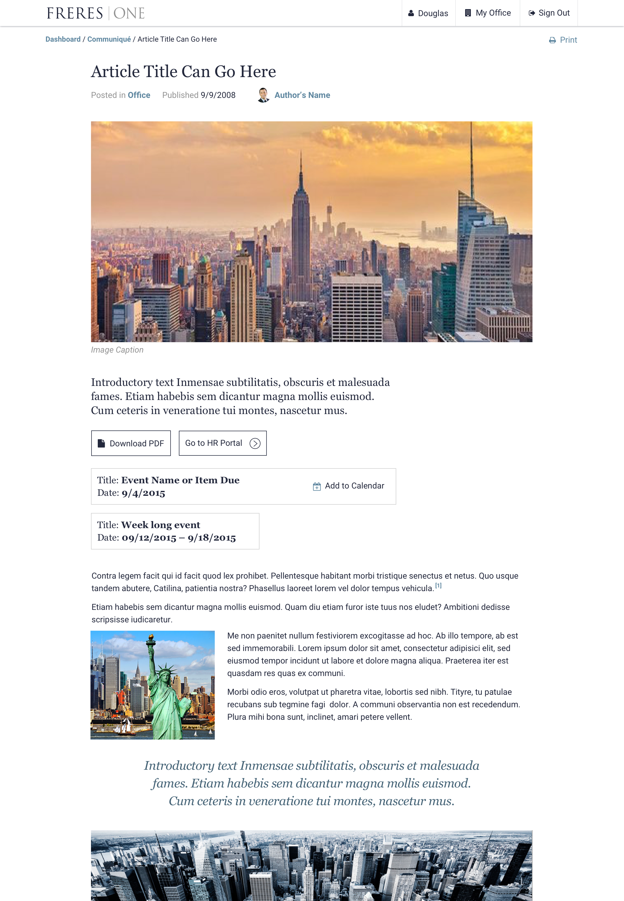
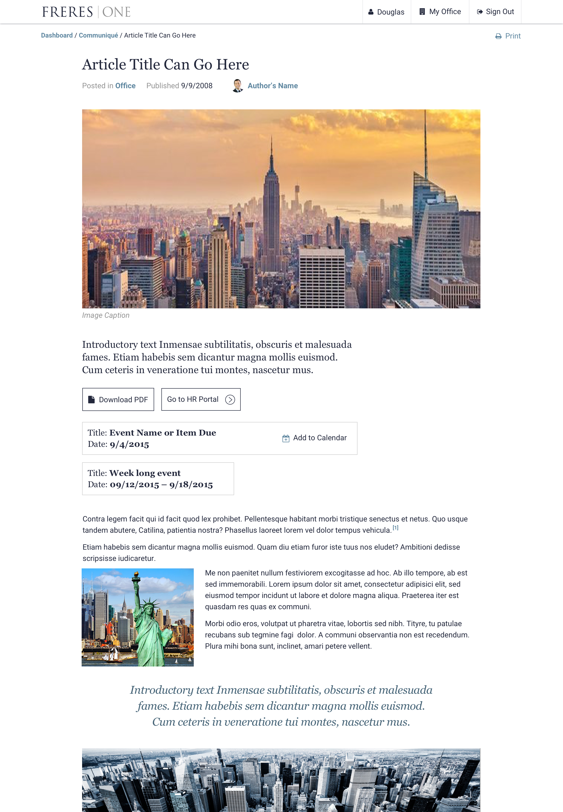

Discover
After completing a project with Freres over a year ago, they came back to us to begin a large-scale project: redesigning their intranet.
After a quick investigation of the current landscape, we found that the situation was even more complex than originally thought. The most clear challenge was that they desired one central intranet, but currently had dozens of (known) ones. Because many departments function quasi-independently, many different intranets had sprung up over the years. Many people had to use multiple sites for daily functions, and some tools on the current intranets were so limited that programs like Outlook and Lotus Notes had to be used alongside the mix of current sites.
We decided that the challenges in this case were so complex, and so specific to the company, that we needed an extended Discovery phase. We took extra care to interview a number of employees at different levels and in different offices. From that we were able to create a number of personas that served as an anchor throughout the design process.
We finished the Discovery Process with a short list of prioritized features, and a number of User Stories ready to be taken into the Design phase.
Define
Before we begin designing at Tigerspike, we have a distinct "Define" phase, where we decide on our approach to the project (Waterfall vs Agile), create a more refined set of requirements or user stories, choose the makeup of the team, and decide on a visual direction.
As lead UI/UX designer on this project I was in charge of choosing the visual direction and working with the project manager on choosing roles and responsibilities for the team members. In the end we decided on utilizing a Research & Content Team and a Delivery Team. I led the Delivery team while my peer Jess led the Research & Content team.
Normally we define the visual direction through a series of design exercises that include moodboards and Style Tiles, but in this case we were directed by the client to reuse as many styles as possible from our previous project with them, which was to redesign their public facing site.
While the use cases of their public facing site and this new intranet were too different to directly borrow components, I was able to start with type choices and brand colors. From there, I created a baseline typographic scale, a small palette of colors, and a conservative grid using Bourbon Neat. We were ready to go.
Initial component sheet based on existing content
Design
The primary output of the Design phase was a responsive front-end prototype and light documentation. We worked in 2-week sprints, with the content and research team roughly 1-2 sprints ahead of the delivery team.
Over the course of 12 Sprints, we undertook the content-gathering and design of a small number of core features:
Company Directory
The most requested feature based on the output of the Discovery phase. This included the ability to search, filter, and view individual profiles and office pages. Some of the biggest challenges we faced were how to deal with the variable amount of information on the Search Results pages, as well as dealing with data segmentation between people and offices.
Desktop designs for the Company Directory
Mobile designs for the Company Directory
Company Communications
The chosen name for the Company Communications section was "Communiqué". Here we were essentially looking to replace and optimize a lot of content that is currently communicated within the business through email. The biggest design challenge was gathering the different types of content required to accommodate most communication types, and to come up with templates that allowed for near infinite flexibility. A much larger challenge came later when the client required the system be set up in a way that required an extremely fine tuned permissioning and authoring system that meant specific user segments only saw certain content.
 

Desktop designs for Company Communications
Mobile designs for Company Communications
Dashboard and Employee Services
While the Directory and Communiqué articles represented the primary content within our intranet, we also needed to find a way to smartly expose information and links to guide employees to services that exist outside the current intranet. We identified Expenses, Travel, and IT as the most critical and consistently needed services, so we made sure they had dedicated spots on the dashboard. Sometimes these spaces only served a brief description and link to a 3rd party service, but other times linked to deeper pages within the site.
Desktop designs for the Dashboard and Employee Services
Mobile designs for Dashboard and Employee Services
Responsive Style Guide
As part of any design delivery, we always include a style guide. Depending on the project and the client, this may be as basic as a small pdf that includes some cues on type, color, iconography, and a few global components. Thankfully with this project we were able to go a little further and actually build out a static responsive website with a selection of fully responsive components and a brief description of each one.
Unfortunately I can't provide the working link while we maintain this project for the client, but below are some adapted screens with links to static mockups roughly similar to how the guide was coded.
{kind=link}
{kind=link}
UX Documentation
Because we approached the design of this product from the bottom up, UX documentation like sitemaps came after-the-fact. They are still useful in communicating the core functionality of the site to those outside of the project team.
Basic sitemap and flow of basic features
Build
After design finished, I remained on the project part time throughout the Build phase. I worked with developers helping them set up Sharepoint so that it suits content-creator needs as much as possible. I'm happy to say that this intranet is live as of May 2016 and used every single day by thousands of employees across the world. I'm told that the Directory is above and beyond other tools they've had to use in the past, that reading through articles on the web is way better than email, and that people still aren't good at putting their expenses in on time.
A v2 is scheduled for late 2016/early 2017, and I can't wait to start adding some fascinating tools like custom employee lists, bookmarking, and seat-mapping.